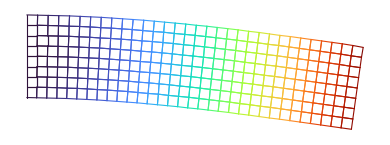
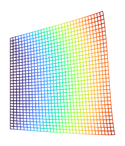
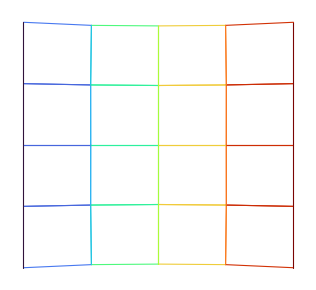
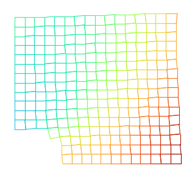
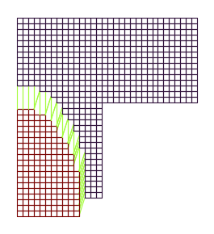
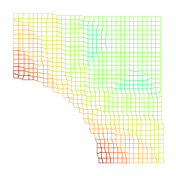

Crucible-FEA: 2D Finite Element Structural Solver
Crucible-FEA is a custom 2D structural solver written in C++20, built from scratch to understand Finite Element Analysis at the implementation level. It uses bilinear quad (Q4) and serendipity (Q8) elements with Gauss quadrature, sparse matrix assembly, direct and iterative solvers, and adaptive mesh refinement driven by the Zienkiewicz-Zhu error estimator. The solver validates against 6 classical benchmark cases with analytical references.
Desktop Application
A native Qt 6 desktop tool for interactive mesh generation, boundary condition assignment, solver execution, and results visualization.
Full workflow: mesh generation to stress visualization. Load a case, assign boundary conditions, solve, and analyze results.
Application Walkthrough
Crucible-FEA Desktop provides a complete FEA workflow organized into dockable panels. The left dock handles input (mesh, boundary conditions, materials), the center is the 2D viewport, and the right dock controls the solver and displays results. A collapsible bottom dock holds analysis plots.
a. Mesh Editor
Mesh editor panel with configurable element counts, grading controls, and real-time quality metrics.
Generate structured Q4 or Q8 meshes with configurable element counts (nx, ny). Mesh grading allows biased element sizing toward edges or corners. Real-time quality metrics show aspect ratio, skewness, and Jacobian ratio for each element before solving.
b. Boundary Condition Editor
Interactive boundary condition assignment with visual feedback on the mesh.
Point-and-click boundary condition assignment. Select nodes or edges in the viewport, choose Dirichlet (fixed displacement) or Neumann (applied force), pick the active DOFs (ux, uy), and enter the value. Boundary conditions appear as colored symbols on the mesh: yellow triangles for fixed, green arrows for forces.
c. Material Properties
Material properties panel with preset values for common engineering materials.
Configure material properties for the analysis: Young's modulus (E), Poisson's ratio (ν), density (ρ), thickness (t), and thermal expansion coefficient (α). Preset materials (steel, aluminum, titanium) fill common values. The plane stress/strain toggle adjusts the constitutive matrix automatically.
d. Solver Panel
Solver panel with direct/iterative method selection and real-time progress feedback.
Choose between Cholesky (direct, for small meshes) or Conjugate Gradient (iterative, for large meshes). Set the CG tolerance and maximum iterations. The progress bar shows assembly and solve phases in real time. The cancel button interrupts the solver mid-run without crashing the application.
e. 2D Viewport
Interactive 2D viewport with deformed mesh visualization and contour coloring.
Pan and zoom the mesh with mouse controls. The viewport renders the wireframe mesh, deformed shape (with adjustable scale factor), and contour coloring for any selected field. Toggle between original and deformed configurations. Coordinate axes and grid snapping provide spatial reference.
f. Stress Analysis
Stress contour visualization with scientific colormaps and accurate min/max range.
Visualize six stress components: sigma_xx, sigma_yy, sigma_xy, Von Mises, sigma_1 (max principal), and sigma_2 (min principal). Scientific colormaps (turbo, viridis, RdBu_r) ensure perceptual accuracy. The colorbar at the bottom shows the exact min/max range. Nodal stress recovery via superconvergent patch recovery (SPR) provides smooth contours.
g. Principal Stress Arrows
Principal stress direction visualization with tension/compression color coding.
Element-based arrow visualization shows the principal stress directions at each element centroid. Red arrows indicate tension (sigma > 0), blue arrows indicate compression (sigma < 0). Arrow length is proportional to stress magnitude. Toggle on/off via the toolbar to reduce visual clutter.
h. Mesh Quality Overlay
Mesh quality heatmap overlay for pre-solve validation of element quality.
A color-coded overlay shows mesh quality metrics per element: aspect ratio, Jacobian ratio, and skewness. Red elements indicate poor quality that may affect solution accuracy. This overlay helps identify problematic regions before running the solver, saving computation time on meshes that need refinement.
i. Probe Tool
Interactive probe tool for reading stress and displacement values at any point.
Click any point in the viewport to read the local stress and displacement values. The probe tool performs ray-casting from the mouse position to the mesh, interpolates shape functions at the hit point, and displays a tooltip with all six stress components, both displacement components, and the element ID. Essential for quick spot-checks without exporting data.
j. Analysis Plots (Bottom Dock)
A collapsible bottom dock contains a QTabWidget with six analysis plots. Each tab provides a different perspective on the solution data, all rendered with custom QPainter widgets.
| Tab | Widget | Description |
|---|---|---|
| Stress Distribution | StressHistogram | Histogram of sigma_xx, sigma_yy, von_mises across all elements |
| Energy Balance | EnergyBalanceChart | Bar chart comparing strain energy 0.5*u^T*K*u vs work done 0.5*f^T*u |
| Displacement Profile | DisplacementLineChart | uy along top edge of mesh (FEA data points connected by lines) |
| Load-Displacement | LoadDisplacementChart | Applied force vs max displacement, accumulates across multiple solves |
| Error Map | ErrorHeatmap | Per-element ZZ error indicator rendered as a colored overlay |
| Convergence | ConvergenceChart | Log-log plot of mesh refinement convergence (GCI, observed order) |
Collapsible bottom dock with six analysis plots for comprehensive solution validation.
k. Project Files
Project file management with human-readable JSON format.
Save and load complete project state as JSON files with the
.cauchy extension. Project files store the mesh,
boundary conditions, material properties, solver settings, and
results. Reopen a project to resume analysis without re-entering
parameters. The JSON format is human-readable and compatible with
the existing CLI pipeline.
l. PNG Export
High-resolution PNG export for reports and presentations.
Export the current viewport state as a high-resolution PNG at 1920x1080. The export includes the mesh contour, colorbar with min/max labels, boundary condition symbols, and title text. Suitable for reports, presentations, and the portfolio website.
Validation Cases

Cantilever Beam
Clamped beam with tip load. Validates element formulation against PL^3/(3EI).
View case →
Cook's Membrane
Trapezoidal panel under distributed shear. Tests Q4 bending and shear locking.
View case →
Patch Test
Constant stress recovery. Mandatory element verification for any new formulation.
View case →
Plate with Hole
Kirsch solution: stress concentration factor of 3 at a circular hole edge.
View case →
L-Bracket
Re-entrant corner stress concentration. Demonstrates mesh refinement needs.
View case →Michell Truss
3-bar truss structure. Validates bar element assembly and hand calculations.
View case →
Thick Cylinder (Lame)
Annular cylinder under internal pressure and thermal gradient. Validates plane strain formulation against Lame solution.
View case →